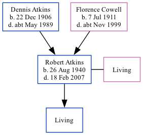

Robert Francis Atkins 1940 - 2007
[ Home ] | [ Calendar ] | [ Surnames Index ] | [ Family History ]The son of Dennis Atkins (a heavy farm laborer) and Florence CowellRobert Atkins, the second cousin on the mother's side of Nigel Horne, was born in Eastry, Kent, England on Aug 26, 19401,2,3 and. He married Margaret Foreman (with whom he had 1 surviving child) in Thanet, Kent, England around Aug 19664. In 2004, he lived at 1 Grove Cottages, Deal Road, Worth, Kent5.
He died on Feb 18, 2007 in Tenterden, Kent, England1.
Parents
- Dennis Thomas was born on Dec 22, 1906
- Florence Emily was born on Jul 7, 1911
Citations
- England & Wales Deaths 2007-2020 - Findmypast
- England & Wales births 1837-2006 - Findmypast
- England & Wales, Birth Index: 1916-2005 Online publication - Provo, UT, USA: The Generations Network, Inc., 2008.Original data - General Register Office. England and Wales Civil Registration Indexes. London, England: General Register Office. © Crown copyright. Published by permission of the Cont
- England & Wales Marriages 1837-2005 - Findmypast
- UK, Electoral Registers, 2003-2010
Media
England & Wales births 1837-2006 - BMD/B/1940/3/AZ/000029/062
England & Wales marriages 1837-2008 - BMD/M/1966/3/AZ/000044/017
England & Wales Deaths 2007-2020 - BMD/D/MILLEN/003033522
England & Wales Deaths 2007-2020 - BMD/D/MILLEN/003659566
Family Tree
Generated by ged2site. Last updated on Nov 13, 2024